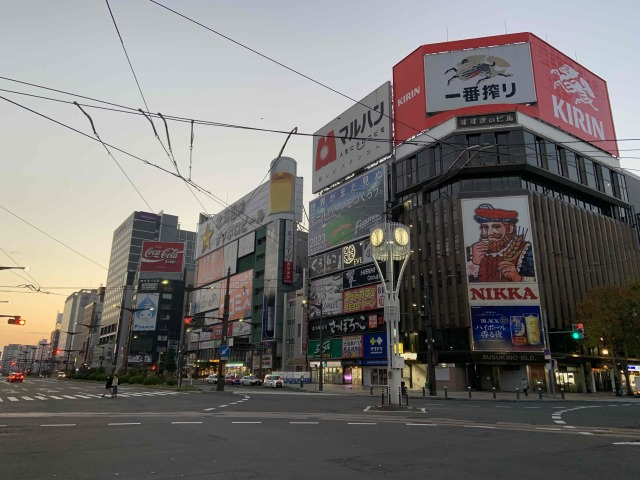
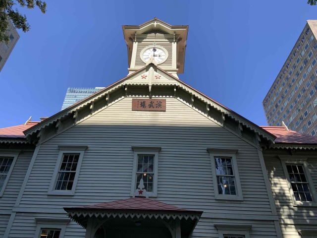
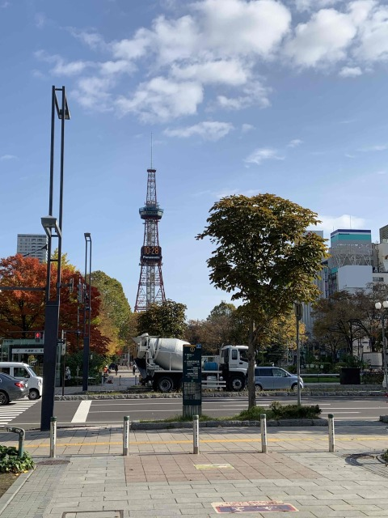

[歴史]
札幌を知る
札幌市は、北海道の道央地方に位置し、人口196万人、10の区から成り立つ
北海道の行政、経済、文化の中心であり、北海道最大の都市である。
旧北海道庁

すすきの交差点
アイヌにの人たちが住んでいた蝦夷地は、明治2年に北海道と改称されて、開拓使が置かれ
札幌本部の建設が始まりました。大正11年の市制施行以降、近隣町村との合併を繰り返し
札幌市を拡大させていきました。
[文化]

札幌市時計台

さっぽろテレビ塔
札幌農学校演武場として造られた札幌市時計台、市民の憩いの場になっている大通公園を
はじめ札幌市にはいろいろな文化があります。